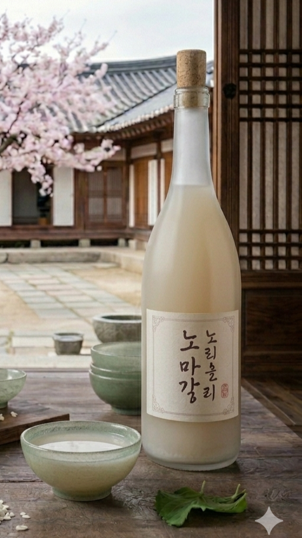

Cara Pembuatan
abdhabshd
Arak beras dan minuman beralkohol yang dibuat dari beras. Berbeda dengan anggur, yang dihasilkan dari fermentasi anggur dan buah-buahan lainnya, "anggur" beras dihasilkan dari fermentasi pati beras yang berubah menjadi gula. Proses ini serupa dengan pembuatan bir; tetapi, bir menggunakan proses menumbuk untuk mengubah pati menjadi gula sementara anggur beras menggunakan proses amilolitik. Minuman beralkohol yang didistilasi dari beras adalah minuman yang khusus berasal dari Asia Timur dan Tenggara, yang kemudian menyebar ke India dan Asia Selatan lewat perdagangan. Arak beras umumnya memiliki kadar alkohol yang lebih tinggi (18-25%) dibandingkan anggur (10-20%), yang jauh lebih tinggi dibandingkan bir (3-8%)
Learn more
Arak beras merupakan hasil dari beras yang difermentasi sehingga dapat menciptakan rasa yang khas. Projek ini menggunakan dua jenis tanaman herbal sebagai bahan tambahan pada arak beras.
abdhabshd